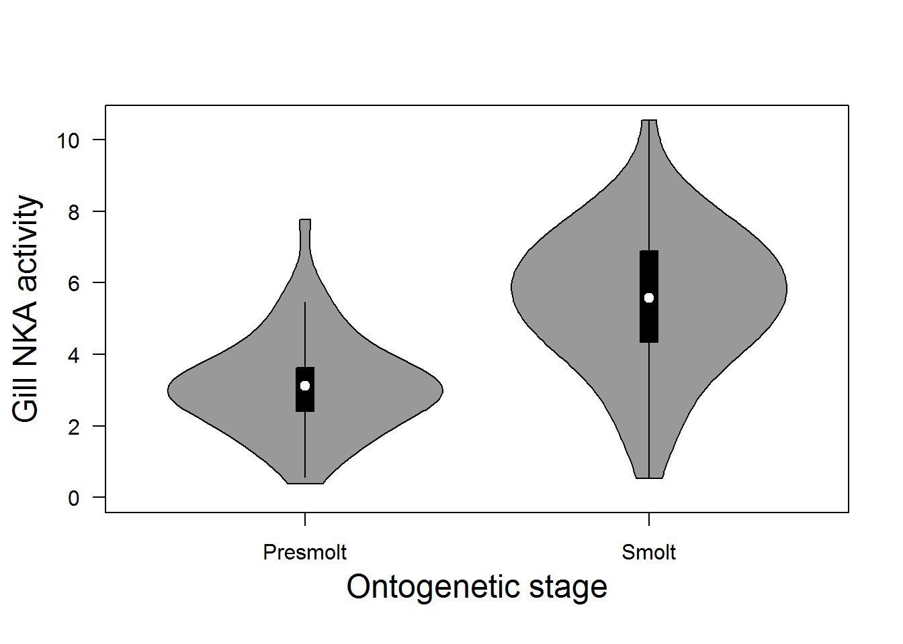
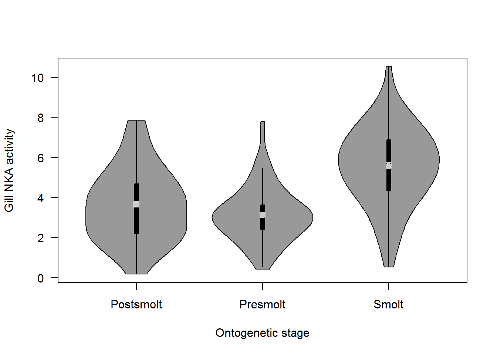

There are good reasons to use plots other than boxplots for distributional comparisons, not the least of which being that they are usually butt ugly. The violin plot shows the actual shape of the sampling distribution using a kernel estimator and is my preferred alternative. Below are a couple examples of how to do this.
Get some data
smolts = read.csv('http://employees.oneonta.edu/stichds/data/smolts.txt')One option is the vioplot package. It is nice, but a little bit of a pain to work with because of the way that it is written.
#install.packages('vioplot') # Uncomment to install
library (vioplot)
# First we make an empty plot to deal with the crap settings in vioplot
plot(x=0:1, # Make x range (0,1)
y=0:1, # Make y range (0,1)
type='n', # Don't actually plot anything
xlim=c(0.5,2.5), # Weird xlim settings for two groups
ylim=c(0,max(smolts$nka)), # Y-axis limits based on data
axes=FALSE, ann=FALSE
)
# Now we add the actual violin plot
vioplot(
add=TRUE, # Add this to the blank plot
smolts$nka[smolts$stage=='Presmolt'], # Plot a violin for presmolts
smolts$nka[smolts$stage=='Smolt'], # Plot a violin for smolts
col = 'gray60' # Violin fill color
)
# Need to add y-axis tick marks
axis(side=2, las=2)
# Need to add x-axis tick marks
axis(side=1, at=c(1, 2), c('Presmolt', 'Smolt'))
# Add y-axis label
mtext('Gill NKA activity', side=2, line=2.5, cex=1.5)
# Add x-axis label
mtext('Ontogenetic stage', side=1, line=2.5, cex=1.5)
The vioplot can be a bit difficult to work with for customization, but the caroline package provides an alternative:
#install.packages('caroline') # Uncomment to install
library(caroline)
# Easier to make a new object for this one if we just want two groups
smolts2 = smolts[smolts$stage!='Postsmolt', ]
# Need to change stage to chr because otherwise 'violins' will try to
# calculate the median for postsmolts even though there are none!
smolts2$stage = as.character(smolts2$stage)
# Make the plot
violins(
x = smolts2$nka, # Variable of interest
by = smolts2$stage, # Grouping factor
connect = NULL, # Don't draw connecting lines (or 'strings')
connectcol = NULL, # Nope
las=1, # Rotate x-axis labels
drawRect=TRUE, # Add the boxplot
rectCol = 'black', # Makes the boxplot stand out more
deciles=FALSE, # Don't plot deciles b/c they are too busy
quantiles=FALSE, # Don't plot quants b/c they are too busy
SD.or.SE = NULL, # Don't plot SD or SE b/c they are too busy
CImed = FALSE, # Don't plot the 95% CI for the median
col=rep('gray60', 3), # Fill color for each box
ylab = 'Gill NKA activity', # y-axis label
xlab = 'Ontogenetic stage' # x-axis label
)OR, we could do all three groups to show how pretty this can be:
violins(
x = smolts$nka, # Variable of interest
by = smolts$stage, # Grouping factor
connect = NULL, # Don't draw connecting lines (or 'strings')
connectcol = NULL, # Nope
las=1, # Rotate x-axis labels
drawRect=TRUE, # Add the boxplot
rectCol = 'black', # Makes the boxplot stand out more
deciles=FALSE, # Don't plot deciles b/c they are too busy
quantiles=FALSE, # Don't plot quants b/c they are too busy
SD.or.SE = NULL, # Don't plot SD or SE b/c they are too busy
CImed = FALSE, # Don't plot the 95% CI for the median
col=rep('gray60', 3), # Fill color for each box
ylab = 'Gill NKA activity', # y-axis label
xlab = 'Ontogenetic stage' # x-axis label
)
This work is licensed under a Creative Commons Attribution 4.0 International License.